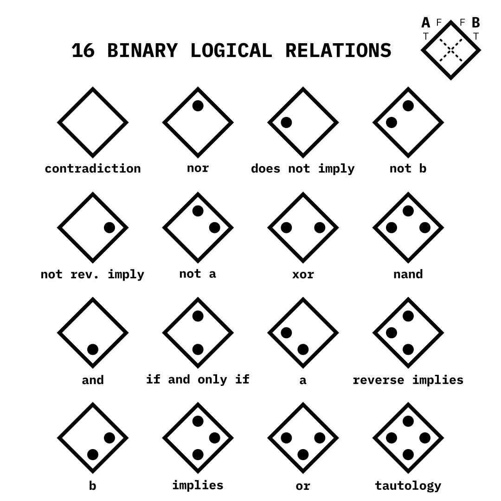

I’m currently taking a discrete structures course for my computer science degree, which deals with classical logic, the basics of rigorous mathematical proofs, and stuff like that. It’s relevant to computer science because logic in this sense is foundational to how computer circuitry comes together to form complex machines like the device you’re reading this on, or like the one this was written on. What I noticed, though, is that the basic binary relations (i.e. between two statements instead of one or three or so on) such as AND, OR, and XOR can be expressed in terms of a 2-by-2 truth table.
If you’re not yet familiar, a truth table shows how one or more different expressions relate to each other based on one or more of them being true or false, or different combinations of true and false. For example, if some statement X is true and another statement Y is false, another statement Z is false, and if Z is true if X false and Y is true, that can be in a truth table along with what Z would be if both X and Y being true or both of them being false.
Anyway, the idea is that a unique symbol can be made from each possible 2-by-2 truth table, and that each 2-by-2 truth table corresponds to a different logical relation. The truth tables are made to be diagonal so that two sides can be next to each other on top, and that those sides can correspond to the two statements being represented by the symbol. Those sides are divided into whether each statement is true or false, and they extended out to form rows and columns which make 4 different spaces. These correspond to both statements being true, both being false, only the first one being true, and only the second one being true. The spaces are marked if the values (e.g. one of the statements being true vs. false) of the corresponding row and column “agree” with the relation that the symbol is representing. So for example, in the case of the relation AND, statement X and Y both have to be true in order for X AND Y to be true. Thus, only the space for the X = true row and Y = true column is marked.
Furthermore, numbers can be assigned to each of the symbols by treating each space as a bit (in binary), and treating a marked space as a 1, and an unmarked space as a 0. The way I did it is false-false is the ones place, true-false is the twos place, false-true is the fours place, and true-true is the eights place. Referring back to the example of AND, it would be assigned the number 8.
I realize that I’m probably not the best at explaining stuff in words, so I made a pretty diagram to visualize what I’m talking about. I use A and B here instead of X and Y, but it’s the same thing as I explained above.
